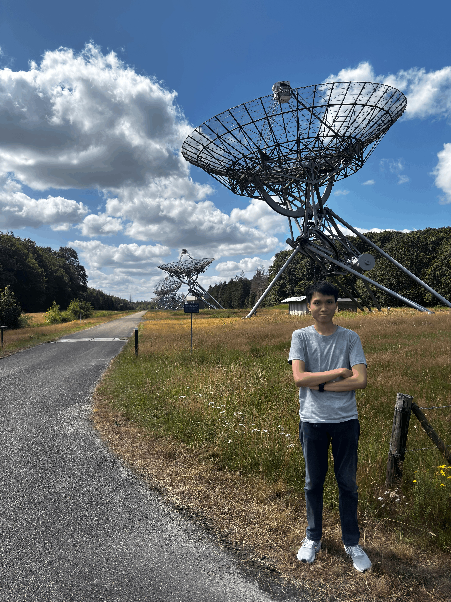

Computational Scientist | Machine Learning Engineer | Data Scientist & Engineer
M.Sc. Computational Science & B.Sc. Astronomy from Institut Teknologi Bandung. Focused on building ML pipelines with advanced statistical methods and optimization techniques for astrophysics research and large-scale high-dimensional data systems.
About Me

I am a computational scientist and machine learning practitioner (M.Sc. in Computational Science, B.Sc. in Astronomy, Bandung Institute of Technology) dedicated to developing AI with a solid foundation in mathematics and science. My expertise lies in statistical modeling and machine learning—both supervised and unsupervised—with a focus on reliably extracting structure from large, high-dimensional datasets. Driven by a strong foundation in both mathematical derivations and scientific programming, I strive to build robust and scalable AI systems that bridge theoretical depth with real-world practical impact.
My background involves the application of these mathematics-based approaches to highly complex data environments. During my master’s research, I developed ENTRAP, a specialized hybrid algorithm that integrates density-based clustering with Topological Data Analysis (TDA) to process and identify hidden structures in spatial datasets comprising millions of records (Gaia DR3). Additionally, during a research internship at the University of Amsterdam, I built a high-performance, high-precision simulation workflow to analyze time-series anomalies in complex dynamic systems. Ultimately, I aim to leverage my expertise in algorithm development and data engineering to solve complex, real-world industry challenges.
Technical Skills
Portfolio
Showcasing robust engineering solutions for massive datasets—spanning unsupervised learning algorithms, ML pipelines, and high-performance data simulations.
History
June 2026 – August 2026
Anton Pannekoek Institute for Astronomy, University of Amsterdam
Engineered a high-precision data simulation and analysis pipeline deployed on HPC infrastructure to model complex dynamic systems and extract time-series anomalies.
September 2024 – August 2026
Institut Teknologi Bandung — P2MI Program
Designed, developed, and deployed ENTRAP, a novel hybrid unsupervised Machine Learning pipeline for clustering million-scale, high-dimensional spatial data.
September 2024 – November 2025
Institut Teknologi Bandung
Managed end-to-end data reduction and signal-processing pipelines on a Linux High-Performance Computing (HPC) cluster to clean massive, highly noisy data streams.
February 2025 – June 2026
Institut Teknologi Bandung
Mentored graduate students in end-to-end Machine Learning workflows, focusing on data preprocessing, feature engineering, and model evaluation.
September 2024 – October 2024
Institut Teknologi Bandung
Instructed participants in massive multiwavelength data processing pipelines utilizing Python and Linux HPC server environments.
Leadership & Contributions
February 2023 – January 2024
Himastron ITB Executive Board
Led the organization's digital presence and communication strategy.
September 2023 – January 2024
Analema Magazine 2023
Directed an 8-person creative team and managed comprehensive production workflows to successfully deliver the Analema Magazine 2023 on schedule.
September 2022 – November 2022
Graduation Ceremony 2022, Himastron ITB
Coordinated a team of 11 staff members, developing robust publication workflows and visual branding guidelines to ensure a cohesive event presentation.
June 2022 – September 2022
Pembinaan Anggota Muda, Himastron ITB
Acted as a mediator and conflict resolution facilitator within the Materials and Methods Division, ensuring smooth interpersonal dynamics and operational stability.
Recognition
2024
Recognized for outstanding academic excellence at the Faculty of Mathematics and Natural Sciences, achieving a perfect semester GPA of 4.00.
2024
Selected to present advanced data-driven research methodologies to an international audience. Successfully published findings in the official conference proceedings.
2025
Presented complex applied unsupervised learning pipeline to massive spatial datasets (Gaia DR3). First-authored paper published on arXiv:2604.23093.
Research Output
IAU Symposium 398: MODEST-25 — Compact Objects and Binaries in Dense Stellar Systems
Conference proceedings presented at Seoul National University, Korea. This paper marked the initial introduction and application of GUMM (Gaussian-Uniform Mixture Model), a custom statistical clustering algorithm developed to extract complex structures from massive spatial datasets.
Monthly Notices of the Royal Astronomical Society (MNRAS)
Peer-reviewed Q1 publication detailing the deployment of a custom signal processing and data reduction pipeline. Leveraged Linux HPC infrastructure to perform advanced statistical fitting on highly noisy data streams.
Contact
Open to research discussions, collaboration opportunities, and Data Scientist / Data Engineer roles.